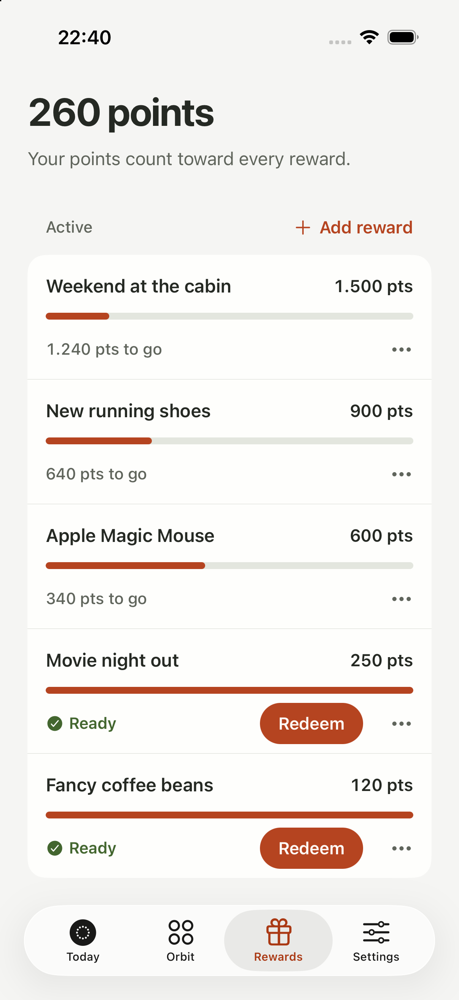
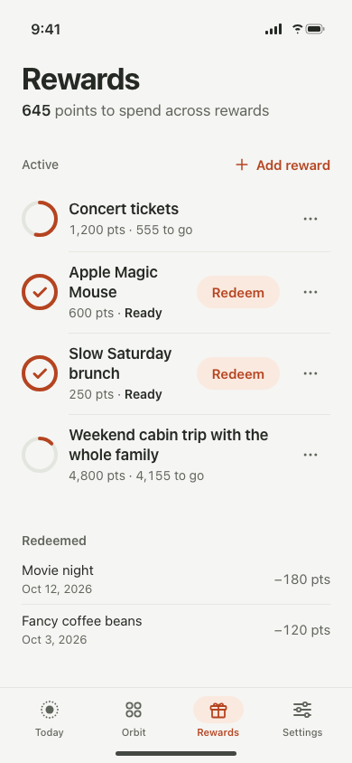
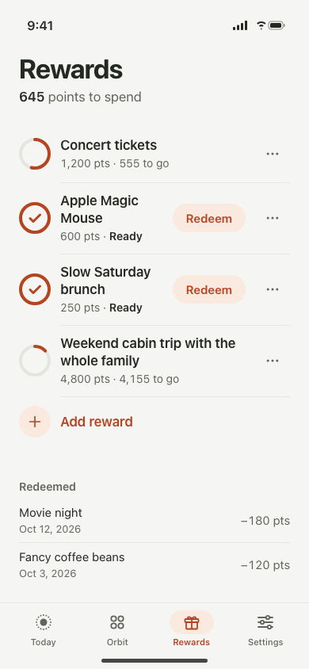
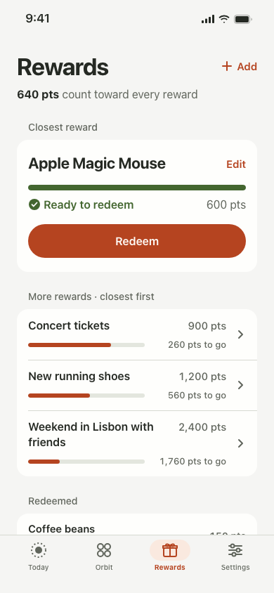
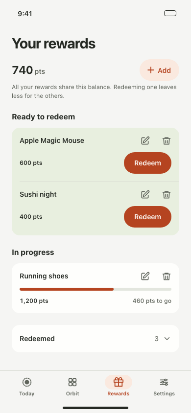
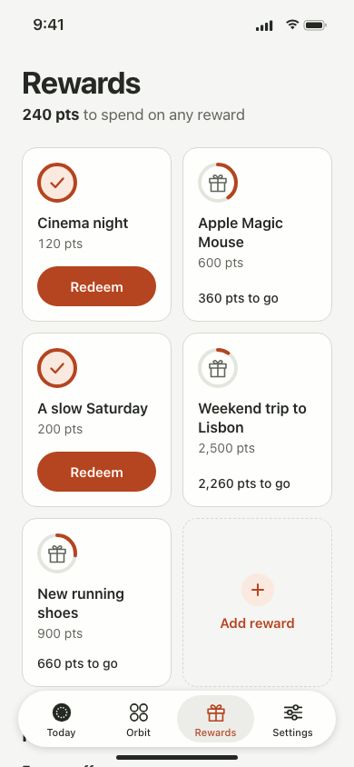
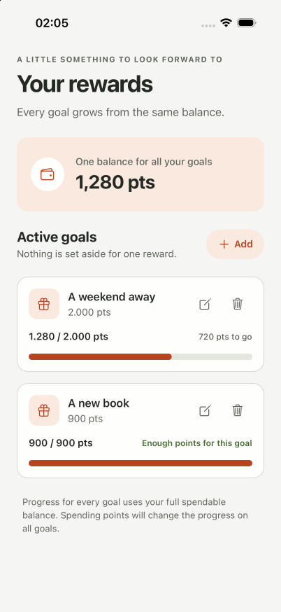

85/100
Balance First
The shared balance leads the screen, with Add reward at the top. Its placement informed the selected refinement.
Open native referenceFive screen structures were compared against the V2 rewards rules and Orbii’s native token system. The selected direction keeps the shared balance in view, makes the next useful action clear, and removes repeated explanations.

Why it won: the Quiet Ledger base scored 86/100 in the independent design review. The final direction keeps its compact single-column hierarchy and adds the reviewer’s recommendations: balance wording that explains sharing and Add reward at the top.
Same shared-balance rules, different screen structures; samples show representative reward data.

The shared balance leads the screen, with Add reward at the top. Its placement informed the selected refinement.
Open native reference
The most compact candidate. Review refinements moved Add reward up and made the shared balance explicit.
View selected refinementOpen original concept
A focused redeem card gives one reward a clear primary action, but uses more space and hides the history at 320px.
Open HTML prototype
Eligibility groups scan clearly, but exposed edit/delete controls add clutter and ready rewards need progress too.
Open HTML prototype
The two-column catalog is distinct, but Add reward collides with the bottom tabs at 320px and the grid feels card-heavy.
Open HTML prototype
Balance, cost, progress, and eligibility compete across cards, with the shared-balance rule repeated below them.
Open baseline screenshotHigher is better. Criteria total 100 points.
| Design | Hierarchy / 25 | Task clarity / 20 | Native fit / 20 | Accessibility / 20 | Polish / 15 | Total |
|---|---|---|---|---|---|---|
| Quiet Ledger · reviewed base | 24 | 16 | 16 | 17 | 13 | 86 |
| Balance First | 22 | 18 | 19 | 14 | 12 | 85 |
| Closest Goal | 20 | 19 | 15 | 14 | 13 | 81 |
| Ready and In Progress | 18 | 16 | 14 | 13 | 10 | 71 |
| Goal Collection | 15 | 13 | 11 | 8 | 12 | 59 |
Scores are comparative visual judgments, not usability-study results; accessibility scores are provisional. The refined winner has browser previews at 390px light and 320px dark. The native 320pt layout, current VoiceOver/TalkBack tree, and Android action sheet have not been verified in a simulator.
Applied in order to the selected screen.
Each row exposes a labeled progress value. Redeem and edit/delete are separate named buttons with 44pt targets; the SVG ring is decorative. Current simulator tree and TalkBack remain unverified.
Rows align progress, reward name, cost, status, and actions. At 320px, Redeem moves below the status and the Redeemed heading remains visible. The app scaffold still hides the scroll indicator.
“645 points to spend across rewards” states the shared balance in one line. Buttons start with verbs; progress is short; confirmation names the reward.
System font only: 34pt screen title, 17pt reward names, 14pt metadata, and 15pt action labels. Point values use tabular numerals; long names wrap in the 320px preview.
Uses Orbii semantic tokens in both schemes. Redeem text is 4.67:1 light and 6.64:1 dark on its tonal surface; progress rings are 4.36:1 and 5.77:1 on track.
One icon family, continuous list rows, separators only between rewards, and no added shadows or animation. Edit and delete use the native iOS action sheet and Android alert.
Post-implementation review used Better Interface as the synthesis pass, then checked Typography, Layout, Accessibility, Writing, Colors, and UI individually. The 390px light and 320px dark HTML previews have no console errors. Contrast ratios are measured against the native palette; simulator behavior after this visual revision remains to verify. Impeccable product/distill removed the eyebrow, wallet card, repeated explanation, and duplicate point values. Frontend Design and Design Taste kept the result specific to Orbii’s tokens instead of a generic dashboard.
Keep one screen per PR; issue #100 remains open.
Screenshots use sample data. The refined Quiet Ledger direction is implemented in Expo; the other concepts are stand-alone HTML previews and are not imported into production. The browser prototypes demonstrate layout and tokens, not native interaction. VoiceOver/TalkBack and the final 320pt native layout still need device verification. No new product rule was added; the approved spec remains the source of truth.